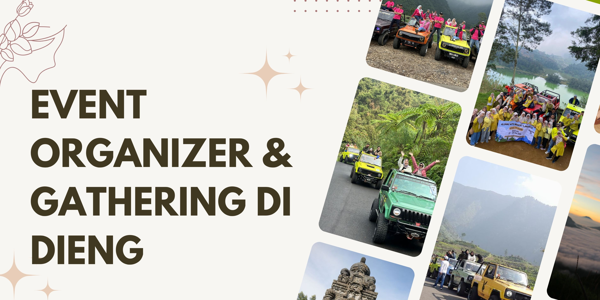

EO Dieng: Event Organizer & Gathering di Dieng
EO Dieng hadir sebagai partner terpercaya untuk mengelola berbagai event, gathering, dan outbound di kawasan Dataran Tinggi Dieng. Kami memahami kebutuhan perusahaan, komunitas, maupun sekolah yang ingin merasakan pengalaman acara yang terorganisir dengan baik di tengah suasana alam Dieng yang sejuk dan unik.
Dengan tim berpengalaman dan jaringan lokal yang solid, EO Dieng siap membantu merancang konsep acara sesuai kebutuhan, mulai dari persiapan hingga pelaksanaan. Setiap kegiatan dirancang agar berjalan lancar, aman, dan memberikan pengalaman berkesan tanpa harus repot mengurus detail teknis sendiri.
Layanan
Kami menawarkan berbagai layanan event organizer yang dapat disesuaikan dengan kebutuhan Anda. Mulai dari acara perusahaan hingga komunitas, semua dirancang agar setiap momen di Dieng semakin bermakna.
- Gathering perusahaan dan outing kantor
- Family gathering dan acara komunitas
- Outbound, team building, dan fun games
- Field trip sekolah dan edukasi alam
- Workshop, seminar, dan pelatihan di Dieng
- Event custom sesuai kebutuhan klien
Fasilitas
Untuk memastikan setiap acara berjalan lancar, kami menyediakan berbagai fasilitas pendukung yang lengkap dan bisa disesuaikan dengan kebutuhan event Anda.
- Transportasi selama kegiatan
- Akomodasi/hotel di sekitar Dieng
- Konsumsi (makan dan snack)
- Perlengkapan acara & kebutuhan teknis
- Tim pendamping profesional & MC
- Dokumentasi foto & video
- Perlengkapan outbound & fun games
- Api unggun dan barbeque (opsional)
Keunggulan EO Dieng
- Tim berpengalaman, profesional, dan ramah
- Jaringan lokal dan vendor terpercaya
- Konsep acara fleksibel sesuai kebutuhan klien
- Harga transparan dan layanan all-in
- Pendampingan penuh dari awal hingga akhir acara
- Destinasi wisata eksklusif dan rute pilihan terbaik di Dieng
Inspirasi & Tips Event di Dieng
- Tips Sukses Gathering: Pilih waktu di musim kemarau, rancang aktivitas sesuai kebutuhan, dan komunikasikan preferensi peserta kepada tim EO.
- Ide Itinerary: Ice breaking, team building di alam terbuka, sesi foto bersama, hingga api unggun malam hari.
- Destinasi Favorit: Telaga Warna, Kawah Sikidang, Bukit Sikunir (sunrise), Batu Pandang, Candi Arjuna.
- Cerita Sukses: Pernah mengelola outing perusahaan dari Jakarta dengan 80 peserta, semua puas dan acara berjalan sesuai harapan.
- Checklist: Tentukan jadwal, jumlah peserta, pilih paket & destinasi, siapkan kebutuhan khusus, konsultasi dengan tim EO Dieng.
- Glosarium: Outbound, fun games, ice breaking, rundown, MC.
Artikel Rekomendasi
- 7 Tips Agar Gathering Kantor di Dieng Berjalan Lancar dan Seru
- Inspirasi Tema Outbound untuk Event Komunitas di Dataran Tinggi Dieng
- Checklist Barang Wajib Saat Mengikuti Acara di Dieng
- Destinasi Favorit untuk Team Building di Dieng
Pertanyaan yang Sering Ditanyakan (FAQ)
Apakah EO Dieng bisa melayani event untuk perusahaan luar kota?
Ya, kami melayani klien dari berbagai kota di Indonesia. Penjemputan dan transportasi dapat diatur sesuai kebutuhan peserta.
Berapa minimal peserta untuk menggunakan layanan EO Dieng?
Minimal peserta umumnya 20 orang, namun kami juga melayani group kecil atau private event dengan konsep yang fleksibel.
Apa saja jenis kegiatan yang bisa dibuat oleh EO Dieng?
Kami bisa mengorganisir gathering perusahaan, outbound, team building, field trip sekolah, family gathering, hingga workshop atau seminar di area Dieng.
Apakah ada paket custom sesuai permintaan?
Tentu, kami siap membantu merancang acara sesuai kebutuhan dan budget klien, mulai dari rundown hingga pilihan destinasi dan fasilitas.
Bagaimana jika cuaca kurang mendukung?
Acara tetap berjalan dengan penyesuaian rute dan aktivitas. Keamanan peserta selalu menjadi prioritas utama.
Apakah harga sudah termasuk semua fasilitas?
Ya, harga sudah termasuk transportasi, konsumsi, akomodasi, perlengkapan acara, dan dokumentasi sesuai paket yang dipilih.